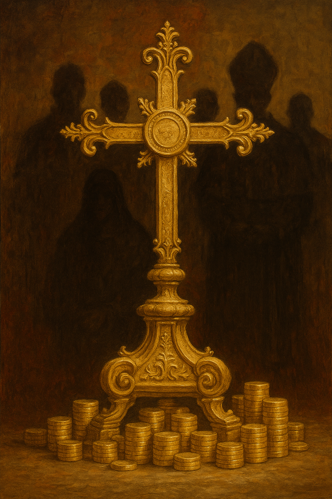

Publicado em 2025-05-03 14:48:34
Disse o Papa Francisco, com voz cansada de herdar segredos:
“A Igreja dos mártires é a que triunfa, não a que tem dinheiro nos bancos.”
E o mundo aplaudiu — como quem ouve uma criança a dizer verdades óbvias num jantar de família hipócrita.
Mas depois… nada mudou.
As catedrais continuam iluminadas por candeeiros de cristal.
Os confessionários estão vazios, mas os cofres cheios.
A fé anda a pé, mas o clero circula em SUVs discretos, com motorista do Vaticano e investigações arquivadas por conveniência divina.
Há dois mil anos, um homem pregava descalço nas colinas, rodeado de pescadores e prostitutas.
Hoje, os seus sucessores assinam contratos com multinacionais, enquanto vendem a promessa de uma vida eterna — em suaves prestações mensais.
A Igreja dos pobres existe, sim.
Está nas favelas, nas aldeias esquecidas, nos mártires que ainda morrem de fé e fome.
Mas a Igreja que triunfa… é a que assina parcerias com bancos suíços e aconselha fundos de investimento ético.
É a que constrói universidades privadas com propinas celestiais e administra patrimónios como quem gere rebanhos obedientes.
O problema não é a fé.
É o negócio da fé.
Não é Deus — é quem O representa com fatura e carimbo.
Não são os crentes — são os que criaram um império sob a capa do sagrado.
Uma burocracia da alma, onde o inferno é apenas uma ferramenta de retenção de clientela.
O Papa tem razão.
A Igreja dos mártires é a única que merece vencer.
Mas foi abafada pela de mármore, de mordomos e miragens.
A mesma que diz: “não junteis tesouros na Terra” — enquanto envia os lucros para offshore.
A fé tornou-se operação de marketing.
A salvação, um produto com boa margem.
O amor ao próximo, um jingle de Natal institucional.
Aceitamos, calamos, aplaudimos.
Porque é mais cómodo ajoelhar do que pensar.
Porque é mais fácil dar esmola do que exigir justiça.
Porque é mais seguro rezar do que escrever.
Mas enquanto houver um mártir esquecido, um pobre zombado, uma verdade escondida…
…haverá quem escreva.
E se nos faltarem altares, escreveremos nas pedras.
E se nos faltarem pedras, escreveremos no vento.
Porque a verdadeira Igreja dos mártires — é feita de memória.
E de palavras que não se deixam queimar.
Augustus Veritas Lumen